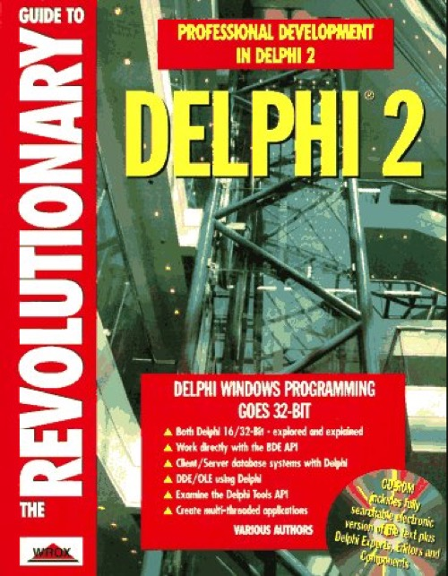

The Revolutionary Guide to Delphi 2
Published by : Wrox Press
Writed by : Bob Swart, Ewan McNab, Brian Long, Paul Hinks, Douglas Horn, Arjan Jansen, Dare Jewell, William Wako, Colin Winning
Published date : 01/02/1995
ISBN-10 : 1874416672
ISBN-13 : 9781874416678
Language :  English
English
Web site : http://www.drbob42.com/books/revguide.htm
About The Revolutionary Guide to Delphi 2
Aimed at professional software developers who have latched onto Delphi as their vehicle for Windows development, this title covers the advanced areas of the language and development environment. Working Delphi programmers take the reader through Object Pascal implementation, InterBase engine applications and interfacing with OWL/Paradox and the Windows API. The CD is packed with source code, demos, and tools.
Where to buy ?
This book has the ISBN13 "9781874416678".
If it is still available for sale, you can order it in your favorite bookstore, by its publisher or online at
Amazon CA,
Amazon FR,
Amazon JP,
Amazon UK or
Amazon USA depending on your country.
Table of content
An Outline of Delphi - the Product
Delphi Pascal
Delphi Object Pascal
Application Design
Debugging Windows Applications
Writing Database Applications
The Borland Database Engine
ReportSmith
Borland, SQL and InterBase
Writing Delphi Components
Data-aware Components
Component and Property editors
Delphi Experts and VCS
The Windows API - Beyond the VCL
Interfacing with other apps, using DDE and OLE
32-bit Delphi, inc. threads & OLE automation
Dynamic Link Libraries
Optimization